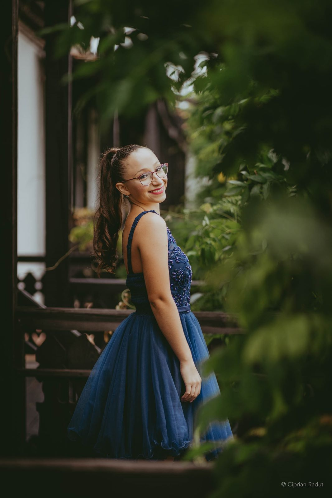

Nume si Prenume: Hulpuș Ștefania – Claudia

E-mail: stefania_hulpus@yahoo.com
Educatie
„Natura ne face asemanatori. Educatia ne deosebeste.” (Confucius)
| Disciplina | Perioada de studiu | Link |
|---|---|---|
| Programarea calculatoarelor si limbaje de programare | Anul I, Semestrul I | https://el.el.obs.utcluj.ro/site/2021_2022/tst/PDF/TST04.00.pdf |
| Dispozitive electronice | Anul I, Semestrul I | https://el.el.obs.utcluj.ro/site/2021_2022/tst/PDF/TST12.00.pdf |
| Grafica asistata de calculator | Anul II, Semestrul I | https://el.el.obs.utcluj.ro/site/2021_2022/tst/PDF/TST15.00.pdf |
| Telefonie | Anul III, Semestrul 6 | https://el.el.obs.utcluj.ro/site/2021_2022/tst/PDF/TST36.00.pdf |
| Radiocomunicatii | Anul III, Semestrul 6 | https://el.el.obs.utcluj.ro/site/2021_2022/tst/PDF/TST40.00.pdf |
Hobby-uri
- Muzica
- Dans
- Shopping